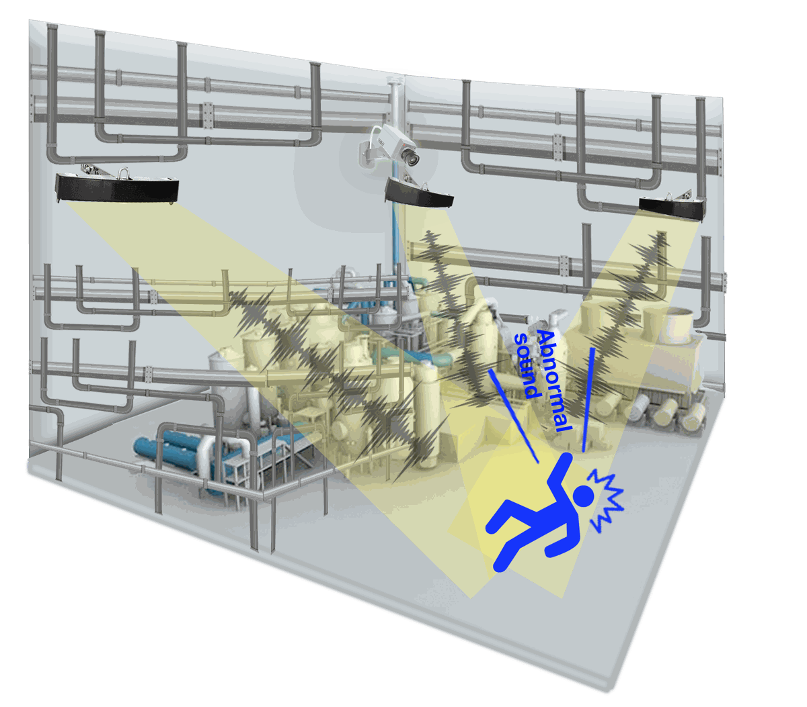

For cities
Smart city noise monitoring
Officials see where and when noise happens, block by block.
Sensors on existing poles log the type, level, location, and time of each noise event.
See the details →We set up the same acoustic technology for city noise, industrial safety, and equipment inspection.
Each sensor analyzes sound on the device. Only the analysis results and the audio from each event are sent out. Pick a use to read the details below.
Officials see where and when noise happens, block by block.
Sensors on existing poles log the type, level, location, and time of each noise event.
See the details →
Spots incidents outside the camera's view.
Sensors find where an abnormal sound came from and turn the nearest CCTV toward it.
See the details →
Inspectors can pinpoint a fault on screen.
Overlays the spots where ultrasound comes from on the live camera image.
See the details →Officials see where and when noise happens, block by block.
We place sensors where noise complaints keep coming back. Each one logs what made the noise, where it came from, and when. Officials can then choose enforcement hours and places, and decide where to add noise barriers or other facilities, without sending a crew to every complaint.
| Sounds we detect | Motorcycle noise, construction noise, car horns, and everyday noise in complaint areas |
|---|---|
| Where it is installed | Existing poles, such as CCTV poles and vehicle-detection poles. No new site is needed. |
| What the control screen shows | Live monitoring, a record of noise by site and hour, and reports on complaint responses |
In the Siheung pilot, complaints in the installed area fell about 60% between Dec 2025 and Jun 2026, with guidance only and no enforcement. Read the Siheung case →

See how often noise happens on your street at night, and how that compares with other areas.
Choose enforcement hours and places, and where to add facilities, based on records.
Turn the records into everyday noise indicators, and check whether a policy is working.
The control screen above shows sample data.
Spots incidents outside the camera's view.
A camera sees only what its lens points at. Our sensors listen across a wider area. When they hear an accident sound or an equipment fault, they find where it came from and turn the nearest camera toward it.
Korea's Serious Accidents Punishment Act now covers workplaces with fewer than 50 employees. That makes it more important to catch an incident early and keep a record of how it was handled.

An accident sound or an equipment fault starts somewhere on site.
The sensor identifies the sound and works out where it came from.
The nearest camera turns to that spot.
The control room receives an alert with video, and the event is saved to the log.
Inspectors can pinpoint a fault on screen.
When a sensor flags a sign of trouble, an inspector takes this camera to the site. It overlays the spots where ultrasound comes from on the image of the equipment, so the fault is easy to find.
| Display | 7-inch screen |
|---|---|
| Battery life | More than 2 hours of use |
| Sensors | Microphone array, camera, and temperature sensor |
| Functions | Acoustic video recording and audio output |

Detect an abnormal sound with the handheld camera.
Process the sound signal.
Overlay the sound image on the camera image.
Find the problem spot on screen.